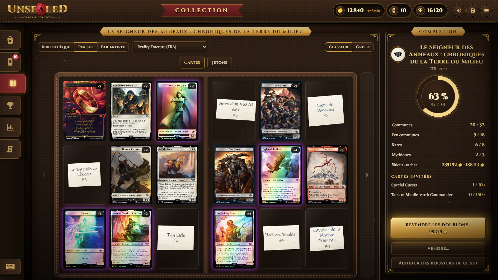

Le classeur d'un setA set's binder

✦
Des taux de tirage fidèlesTrue draw rates
Chaque booster suit la composition réelle de son set, d'Alpha (1993) à aujourd'hui : près de 180 sets, en Play, Draft, Set et Collector, vérifiés par simulation.
Every booster follows its set's real make-up, from Alpha (1993) to today: about 180 sets, in Play, Draft, Set and Collector, checked by simulation.
◈
Les prix du marchéMarket prices
Les cartes valent leur prix du jour. Revendez-les au Boosterium, guettez la carte qui rentabilise le booster, voyez votre collection prendre de la valeur.
Cards are worth today's price. Sell them back at the Boosterium, hunt the pull that pays for the pack, watch your collection's value grow.
❖
L'ouverture, comme en vraiOpening, for real
Déchirez l'emballage en 3D, faites glisser les cartes une à une, dans l'ordre d'un vrai booster. Foils irisés, sons, et une ouverture rapide ou par lots quand on est pressé.
Tear the wrapper open in 3D, slide the cards one by one, in a real booster's order. Shimmering foils, sounds, and quick or batch openings when you're in a hurry.
❧
Une collection à compléterA collection to complete
Une bibliothèque de classeurs, un par set, des séries invitées, des collections par artiste, les cartes manquantes sur des bouts de papier.
A library of binders, one per set, guest series, collections by artist, missing cards on scraps of paper.
♛
96 succès96 achievements
Chacun débloque sa propre carte, dessinée pour le jeu : des premiers paliers jusqu'aux secrets, tous obtenables dans une même partie.
Each unlocks a card of its own, drawn for the game: from the first steps to the secret ones, all reachable in a single game.
✧
100 % gratuit, 100 % virtuel100% free, 100% virtual
Aucun achat, aucune publicité. On joue en Sceaux, une monnaie fictive que rien ne convertit en argent réel. Votre collection rapporte même un peu chaque minute.
No purchases, no ads. You play with Seals, a made-up currency nothing turns into real money. Your collection even earns a little every minute.